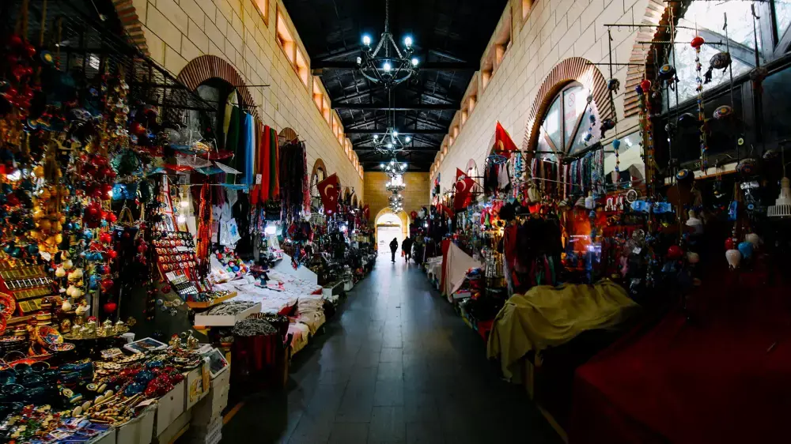

Çanakkale'nin Aynalı Çarşısı'nda
Tarihî Bir Serüven

Çanakkale'nin kalbinde yer alan Aynalı Çarşı, günümüzde halen varlığını sürdüren ve meşhur türkülere konu olmuş tarihi bir mekanımızdır.
Eskiden bu çarşıda atlar için koşum takımları ve süs eşyaları yapan dükkanlar yer alırdı. At gözlüklerine o dönemde "ayna" denildiği için, çarşıda bu ürünlerin satılmasından dolayı bir tür benzetme olarak Aynalı Çarşı adının kullanılmakta olduğu sanılmaktadır.
Çanakkale Türküsü
Türküyü müzik çalarımızdan dinle, kelimeleri seçerek eksik dizeleri tamamla!
Çanakkale içinde ... çarşı,
Ana ben gidiyom düşmana karşı.
Of gençliğim eyvah!
Çanakkale ... bir uzun selvi,
Kimimiz nişanlı kimimiz ...
Of gençliğim eyvah!
Çanakkale üstünü duman bürüdü,
On üçüncü fırka harbe yürüdü.
Of ... eyvah!
Çanakkale içinde bir dolu testi,
Analar babalar ... kesti.
Of gençliğim eyvah!
Kelimeler
Bir kelime seç ve türküdeki yerine tıkla!
Türküdeki Eski Kelimelerin Anlamları
Gerçek mi, Hayal Ürünü mü?
Aşağıdaki cümleleri okuyun. Gerçek hayatta olabilecek olaylar için Gerçek'i, tamamen zihnimizde canlandırdığımız durumlar için Hayal Ürünü'nü seçin!
| Cümle | Gerçek | Hayal Ürünü | Değerlendirme |
|---|
Etkinlik Açıklamaları
Mükemmel İş Çıkardın!
Aynalı Çarşı'nın tarihini öğrendin, meşhur Çanakkale Türküsü'nü eksiksiz tamamladın ve gerçek ile hayal ürünü olanı ustalıkla ayırt ettin. Bu başarınla kültürümüze harika bir katkı sağladın!